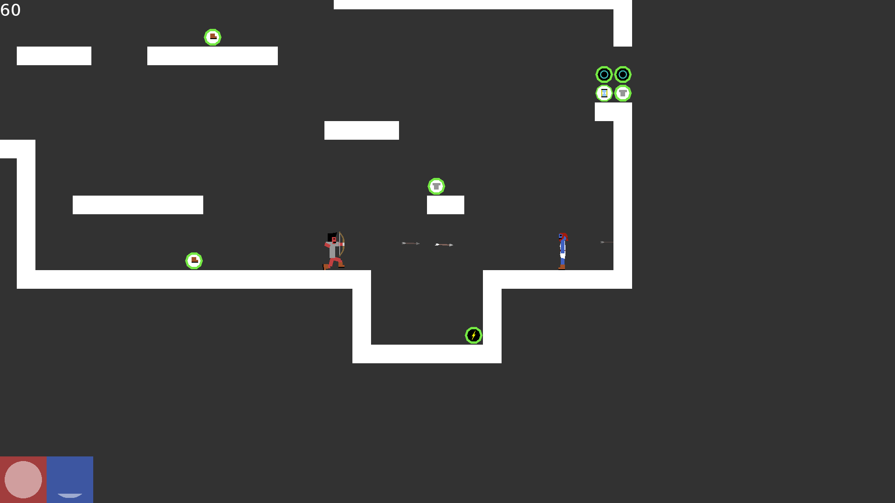
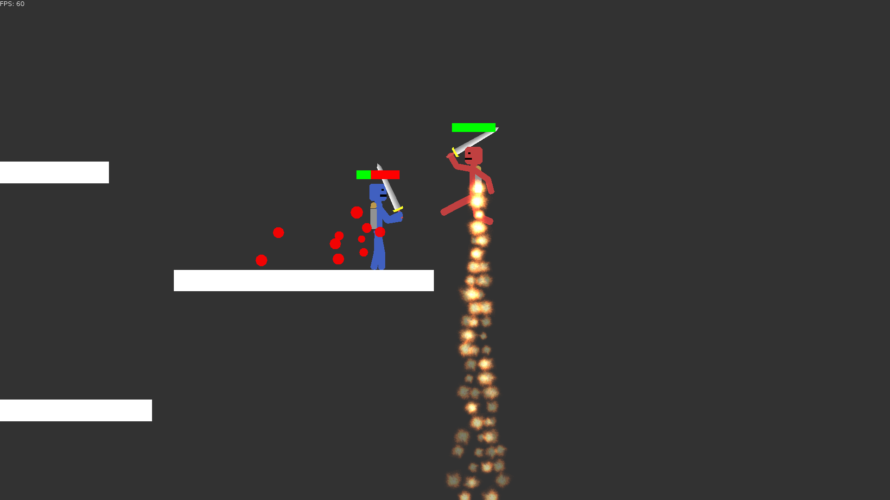
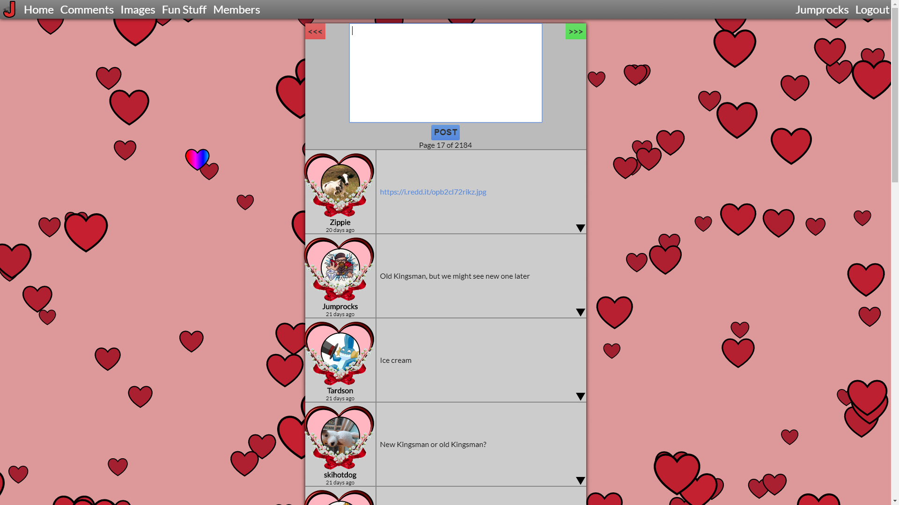
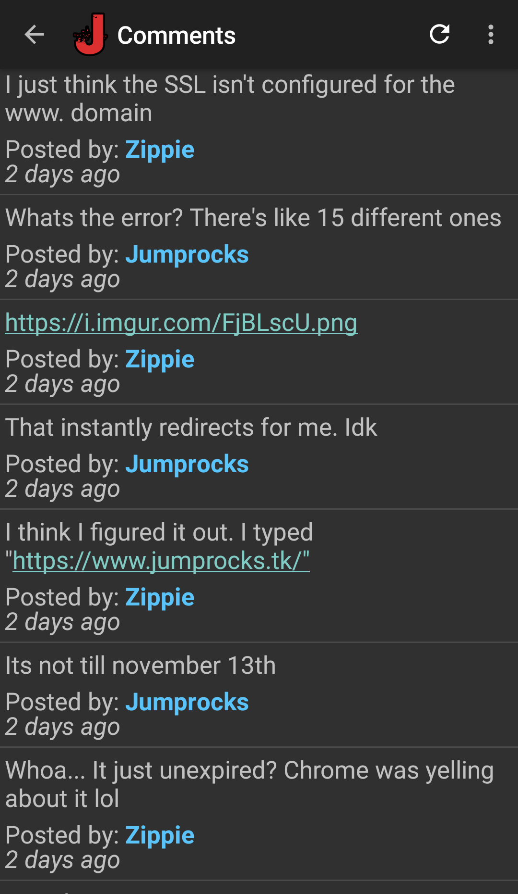
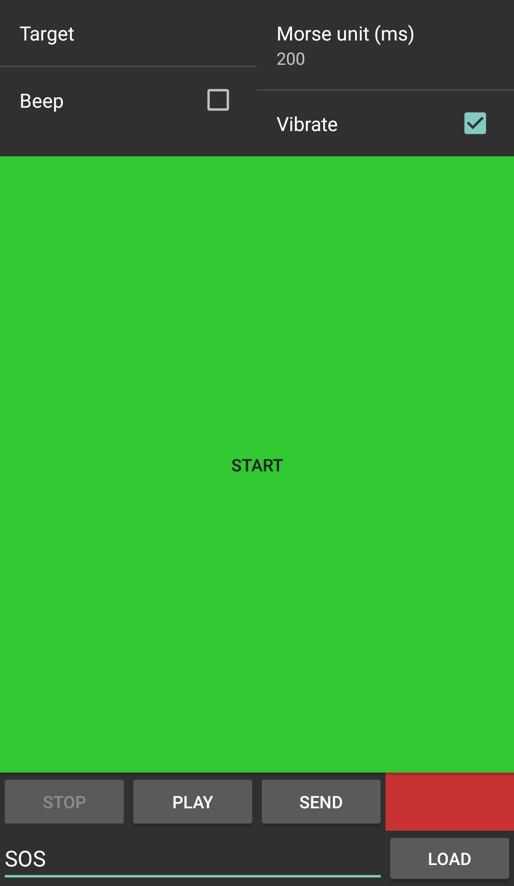

About
Games
Goon Squad
Goon Squad is a game that I created for a Raspberry Pi competition. The game is a simple fighting game that is meant to be played with 4-8 players. The graphics were kept simple enough to run at a consistent 60 FPS on the Raspberry Pi 2 with 8 players.
Show screenshot Download executable + source
Download sourceGoon Squad 2
Goon Squad 2 is a complete rewrite of Goon Squad focused on online multiplayer. The game was instead designed for desktop computers, so the graphics are slightly more intensive. The animation and controls are both much smoother in Goon Squad 2 compared to the original as well.
Show screenshot Download executable + source
Download sourceRoblox
Roblox is a game development platform geared towards a primarily younger audience. Games are created using Roblox Studio and are brought to life through the programming language Lua. When I was younger I made games on Roblox gathering a total of over 4 million plays.
Link to profile
Web
Personal Website
This website has probably been the project I have spent the most time on. I created it in 2011 and I have provided frequent changes ever since. The primary function for this site is to provide an easy and fun communication channel between my friends and I. I have rewritten it twice and I usually create 2-3 seasonal themes for it each year. Each theme typically has moving parts that also allow for user interaction. Most of the features on it are restricted to only accounts, however there are still a few things to look at without an account. Below is a screenshot of the Comments page taken with the Valentine's Day theme activated.
Show screenshot LinkThis Website
This website is just a simple way to compile a few of things that I have worked on through the years. It is meant to be a very simple showcase website.
LinkService Website
This website was created for a school project showcasing service that I did with three other people. It was a small project, but I am happy with how it turned out.
LinkConway's Game of Life
This is just a small interactive web project that I created for fun.
Link
Android
Jumprocks.tk
This app serves to integrate with my personal website. Its provides push notifications and the ability to read and post comments (messages). It requires a verified account to have useful functionality.
Download APKShow screenshot Morse Code
This app is just a simple app that I created to teach myself Morse code. It has sound, vibrating and a blinker to output the Morse code and a text input to convert. It also supports recording messages and playing them back. It can send message as well but this functionality is limited.
Download APKShow screenshot 
Other
ProjectEuler
Project Euler is by far my favorite website for doing programming challenges. The reason I like this site so much is because the questions tend to be more math oriented compared to other sites (ex: HackerRank, CodeChef, Kattis). Many can be done by hand with some clever tricks. All that ProjectEuler requires is the correct answer. I am in the top 1% of users (who have solved at least 1 problem) with 143+ problems solved. I have done most of those 143 problems in Python but I have also done a few in C++ when speed was essential. I have uploaded a few of my favorite solutions to show what I like to do on this site (For problems: 88, 90, 113, 117).
Favorite Solutions